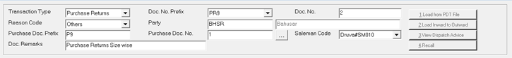
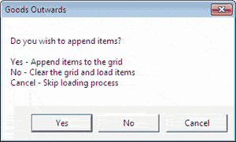

The Goods Outwards Size-wise window is as shown.

Transaction Type: Select the transaction type from the list. The list displays the transaction types Purchase Returns, Transfers Out and Miscellaneous Issue based on the configuration.
Doc. No. Prefix: Depending on the type of transaction selected, the document prefix for the current document is displayed.
Doc. No.: Displays the serial number, based on the prefix, for the current document.
Reason Code: Select the reason for the outward transaction. The reason codes are as per the configuration in the General Lookup catalogue.
Party Code: Enter the party code. Party varies based on the transaction type selected. Alternatively, press F2 to display the list of party codes and names and select the appropriate party code.
The fields Purchase Doc. Prefix and Purchase Doc. No. are enabled if the transaction type selected is Purchase Returns. You can return items with reference to purchase documents, or without any reference. When returning items with reference against purchase documents, you may select the items after setting purchase documents for reference, or select the reference document after selecting the item.
Purchase Doc. Prefix: Enter the purchase document prefix, if there is only one purchase document involved.
Purchase Doc. No.: Enter the purchase document number, if there is only one purchase document involved.
In case you need to select multiple purchase documents, click to open the Purchase Document Browse window.
Note: On clicking if item details are already present in the grid, the following message is displayed. Select as per your requirement.

Salesman Code: Select the salesman code.
Doc Remarks: Enter the document remarks.
Load from PDT File: This option is available based on configuration. Click to load item details from a text file.
If the PDT file format is not configured, the Browse window opens. Select the required PDT file format.
The Open window is displayed for file selection. Choose the file and click Open. The item details will be displayed in the grid.
Load Inward to Outward: This option is available based on configuration. This is useful to send all items in an inward document to any of the stores in the chain. Click to send all the items received against a goods inward document to an outward document Click here for more information.
View Dispatch Advice: This option is available only if any Dispatch Advice is available. Click to select the dispatch advices.
Recall: Click to select from Packing Slip / Pallet Slip.